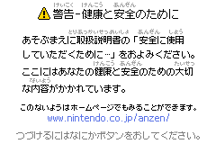

Mother 3 (Japan)
Flash 512K
Cartridge Identity
- Game Code
A3UJ(FamilyA3U)- Header Title
MOTHER3- Maker / Revision
01/ rev0- ROM Size
- 32.0 MiB (33,554,432 B)
- Save Media
Flash 512K- SHA-256
d0f76a5a75454793f0ad59ee7b7b019a7af9ee3174cf0151439ba3ef00f73f98- Engine / SDK Group
comm-009(51 families)
Screenshots

ROM Assets, Compression & Audio
- BIOS Compression
- LZ77 (
0x10): 5,122 streams · RLE (0x30): 0 streams - ROM Pointer Tables
- 619 tables (0 pointing to validated compressed streams)
- SDK Backup Tags
FLASH512_V131
Hardware MMIO Subsystems
ppu_display0x80018f4,0x80569bc,0x8056b18,0x8056cc0,0x805a4bc,0x805ae94save_bus_sram_flash0x8090fe8,0x809123c,0x8091308
Regional Variants & Revisions (Family A3U)
- Mother 3 (Japan) (Virtual Console) (
A3UJ, 32 MiB)